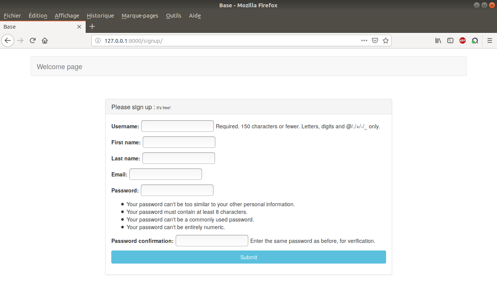
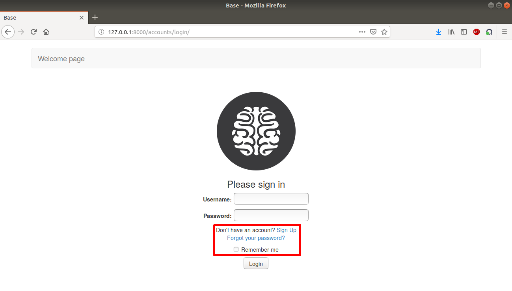

Before accessing the page offering the simulation of networks, it is necessary to create an account by clicking on the Register button from the homepage quoted in the User Guide. The register page appears.
Once the form is completed, click on Submit, then the server grants the user access to the network page and automatically redirects to the latter. Registration is completed by now.
If the user already has an account, then the network page can directly be accessed by authentication through the login page reachable from the homepage, see the User Guide.
When the Login button is pressed, the server authenticates the user using session cookies and redirects to the network page as well. Some self-explanatory options are available on the highlighted area.
These two pages redirect to the homepage by clicking on Welcome page on the navigation bar.
« User Guide :: Contents :: Network Page »